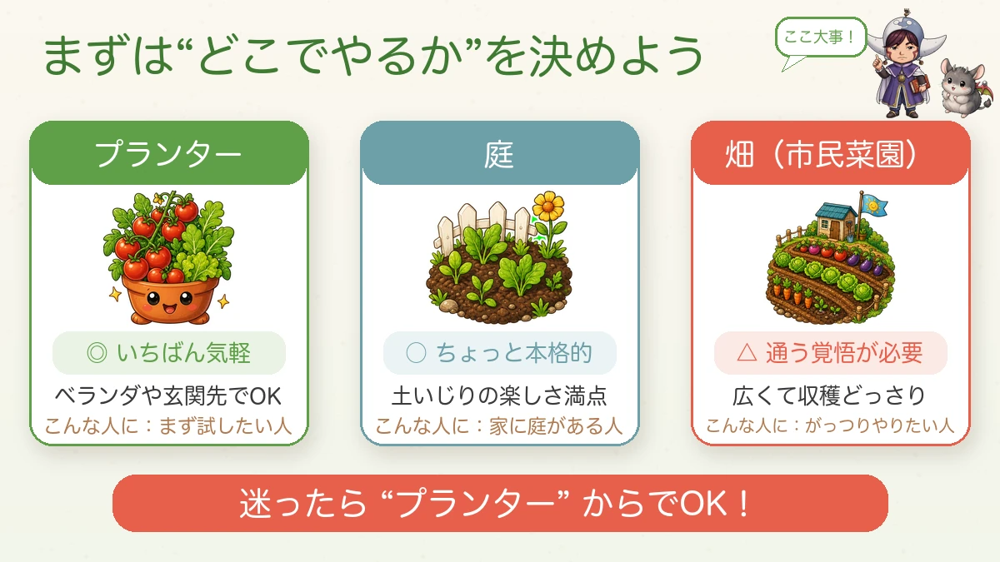
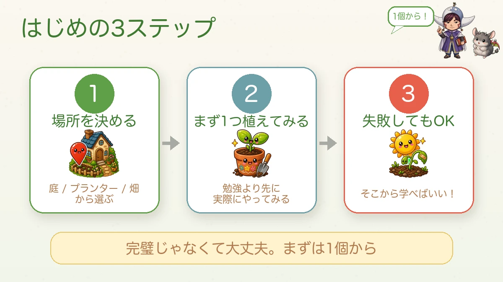
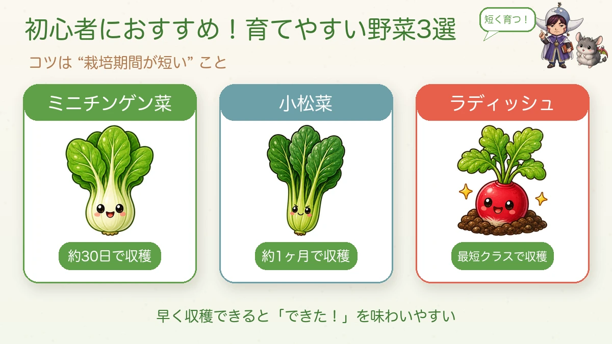
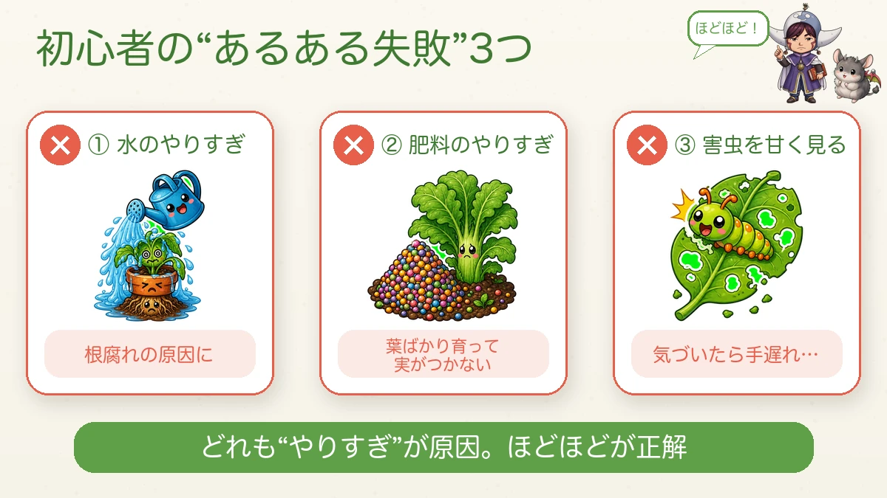
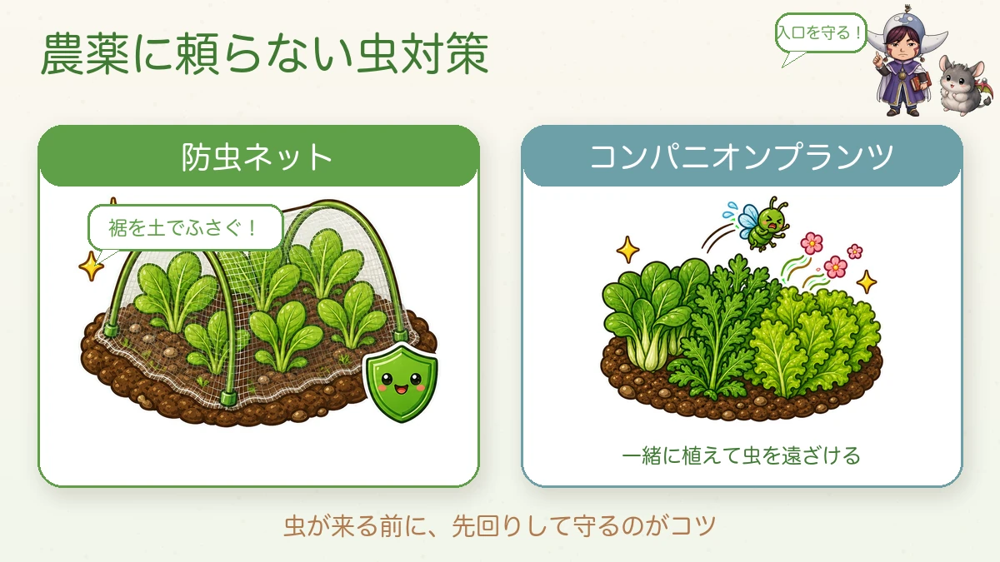

Starting a kitchen garden 🌱 There's only one thing you have to decide first

🗨️ "I'd like to grow something, but where do I even start?"
🗨️ "I'm fairly sure I'd kill it."
🗨️ "Do I need to buy a whole pile of equipment?"
Hello, I'm Eiko. Eight years of growing vegetables organically and without pesticides, and a teaching licence in science.
Let me say the useful bit first.
There is exactly one thing you have to decide at the start.
"That's it?" — that's it. The rest can be worked out as you go, and most of it is easier than it looks.
The one decision: where
Before seeds, before soil, before tools. Decide where you're going to grow. A container, a bed in the garden, or an allotment. Everything downstream changes depending on which one you pick — how much you water, how much you can grow, how often you need to turn up.
And if you can't decide: start with a container. Genuinely.

What this diagram says （図解の文字）
- First, decide "where"
- Container — ◎ easiest of all. A balcony or a doorstep is fine. For: anyone who wants to try it
- Garden bed — ○ a step more serious. All the pleasure of working soil. For: anyone with a garden
- Allotment — △ you have to commit to travelling there. Big, and the harvests are big. For: anyone who wants to go at it properly
- If in doubt, a container is a perfectly good place to start
If it's a container, get a big one
Two things matter: large, and with slits in the base.
Vegetables put out far more root than you can see, and a small container quietly limits everything above ground. As a rough guide, something in the 40-litre class is a good first container.
The slits matter because a slitted base drains freely and needs no layer of crocks or gravel. I'm not a careful waterer, and this is mostly why I haven't rotted roots.
For compost, choose an organic potting compost if you intend to grow without sprays — it saves you fighting your own growing medium later. About 25 litres fills one large container.
The first three steps

What this diagram says （図解の文字）
- The first three steps — start with one!
- 1. Decide the place — choose from garden / container / allotment
- 2. Plant one thing — actually doing it beats reading about it
- 3. It's fine to fail — that's where the learning is
- It doesn't have to be perfect. Start with one.
Step two is the one that matters. Planting a single thing teaches you more, and faster, than any amount of reading.
I came to like science for the same reason: a teacher put a real insect in front of me instead of a textbook page. Once it's a real object, it becomes interesting all at once.
Choose something that finishes quickly
"Easy to grow" mostly means short from sowing to harvest. A long-season crop gives you three months in which to lose confidence; a fast one gives you a result while you're still interested.

What this diagram says （図解の文字）
- Three easy vegetables for a first go — the trick is a short growing period
- Baby pak choi — about 30 days to harvest
- Komatsuna (mustard spinach) — about a month
- Radishes — about as fast as it gets
- An early harvest makes "I did it!" easy to feel
In a UK or US garden the same logic points at radishes, rocket, spinach, loose-leaf lettuce and pak choi. Any of them will crop in roughly a month.
The three beginners' mistakes

What this diagram says （図解の文字）
- The three classic beginner mistakes — moderation!
- × 1. Too much water — causes root rot
- × 2. Too much feed — all leaf and no fruit
- × 3. Taking pests lightly — by the time you notice, it's too late
- All three are "too much". Moderate is correct.
① Too much water
A dry surface does not mean dry soil. Push a finger in — two or three centimetres down it's usually still damp. Watering on top of that is how roots rot.
The skill a beginner actually has to build is the ability to not water.
② Too much feed
When a plant looks unimpressive the instinct is to feed it. Overfeeding gives you leaf instead of fruit, and flavour gets worse rather than better.
A pinch is enough for a top-dressing. Really a pinch.
③ Taking pests lightly
If you're growing without sprays, this is the one that decides the season.

What this diagram says （図解の文字）
- Pest control without sprays — guard the entrance!
- Insect netting — block the hem with soil!
- Companion planting — grow something alongside that keeps insects away
- The trick is to get ahead of them, before they arrive
Without sprays, insect netting is the single most useful thing I own. Dealing with caterpillars after they arrive is work; not letting them in is almost no work at all.
One detail decides whether it works: close the hem with soil. A net with a lifted edge is a net with a door in it.
The other half is companion planting — chrysanthemum greens or loose-leaf lettuce in among the brassicas. Strong-smelling neighbours make a bed less obvious to whatever is looking for it.
Honestly: growing without sprays is harder than growing with them. I think that's exactly why it's worth doing.
My own classic failure
For all the advice above, I've made a mess of plenty. I once left the plot alone for a while, came back, and found the whole thing eaten — leaves stripped, fruit gone, the rest dying off. It was thoroughly depressing.
What I took from it: turning up for five minutes often beats an hour once a fortnight.
Failure is the best teacher there is. Kill something and don't take it to heart.
To sum up
- ✅ Decide where first — container, bed or allotment. In doubt, container
- ✅ Large container, slitted base, organic compost
- ✅ Plant one thing before you read any further
- ✅ Pick something short-season — radishes, salad leaves, pak choi
- ✅ Water less than you want to
- ✅ Feed a pinch, not a handful
- ✅ Net early, and bury the hem
- ✅ Expect to fail, and learn from it
Start with one pot. Having your hands in soil is a surprisingly good feeling on its own 🌱
Thank you for reading!